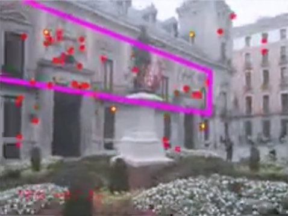
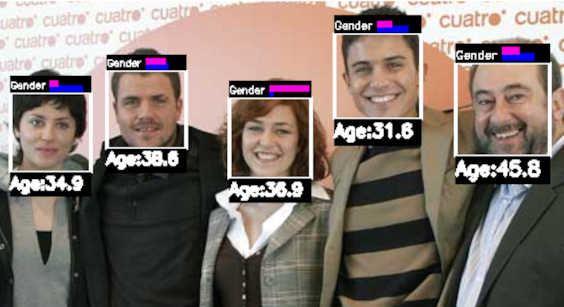

Research for Companies
|

Building Facade Localization. We developed new algorithms for real-time planar building facades localization. This is not an easy problem given the repetitive structures in the building texture. Work funded by The Graffer. Our algorithms, implemented by the Computer Vision engineers at The Graffter, are able to run at 6-10 fps in a Google Nexus 5 on Android. Videos: [Video1], [Video2], [Video3], [Video3]. Patent: Façade Localization Patent'2016. |
|
OCR for ID documents on video. We developed and implemented our own algorithms for the OCR of spanish ID documents. The funding came from Work funded by CAB Magazine Online S.L. (a Spanish company). The goal of the project was to read the 3 OCR lines of the spanish ID documents in short videos. Other countries have only 2 OCR lines. Our software is valid for this other documents also with minimal customization. In this project we developed a full prototype using C++ and OpenCV on GNU/Linux. The prototype is fully functional (10 fps on an Intel Core i5). It makes one mistake on average per ID document (in our limited test cases of few IDs). Unfortunately the company gave up on the project before the full validation of the prototype so we have the software and the project available to any interested company :-) Videos: [Video1] |
|

Facial analysis for video analythics. We developed a set of low computational requirements face analysis algorithms for, Visión Artificial Desarrollos de I+D, a Spanish company. The algorithms were integrated in a product called vAudience for Digital Signage audience measurement. Related Publications: IbPRIA'2011, PAMI'2011, Patent: Gender Patent'2010. |